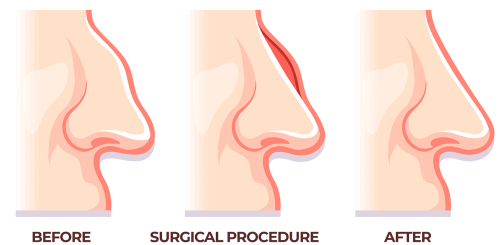

Postnasal Drip
The sensation of mucus dripping down the back of the throat, often due to excessive nasal secretions.
Rhinitis Medicamentosa
Rebound nasal congestion caused by overuse of nasal decongestants.
R hinoplasty
Surgical procedure to reshape or repair the nose.
Rhinorrhea
Medical term for a runny nose.
Rhinosinusitis
Inflammation of the nasal cavity and sinuses, often causing congestion and pain.
S eptoplasty
A surgical procedure to correct a deviated nasal septum.
Septum Deviation
A condition where the nasal septum is displaced to one side, causing nasal obstruction.
Sinus Ostium
The natural opening that allows drainage from the sinuses into the nasal cavity.
Sinusitis
Inflammation or infection of the sinuses, often causing congestion, pain, and pressure.
Sleep Apnea
A disorder where breathing repeatedly stops and starts during sleep.
Snoring
Noisy breathing during sleep, caused by vibration of the soft tissues of the throat.
Soft Palate
The soft tissue at the back of the roof of the mouth, important for speech and swallowing.